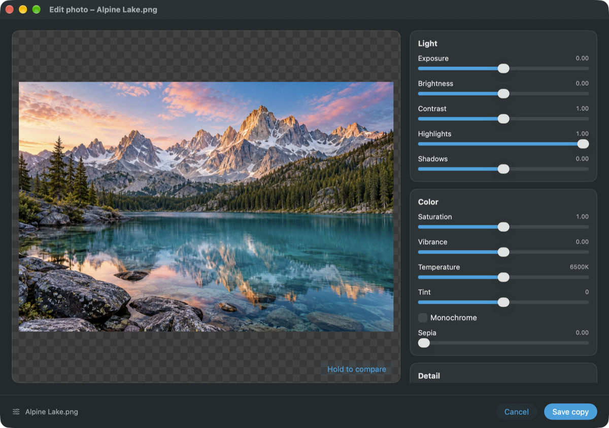
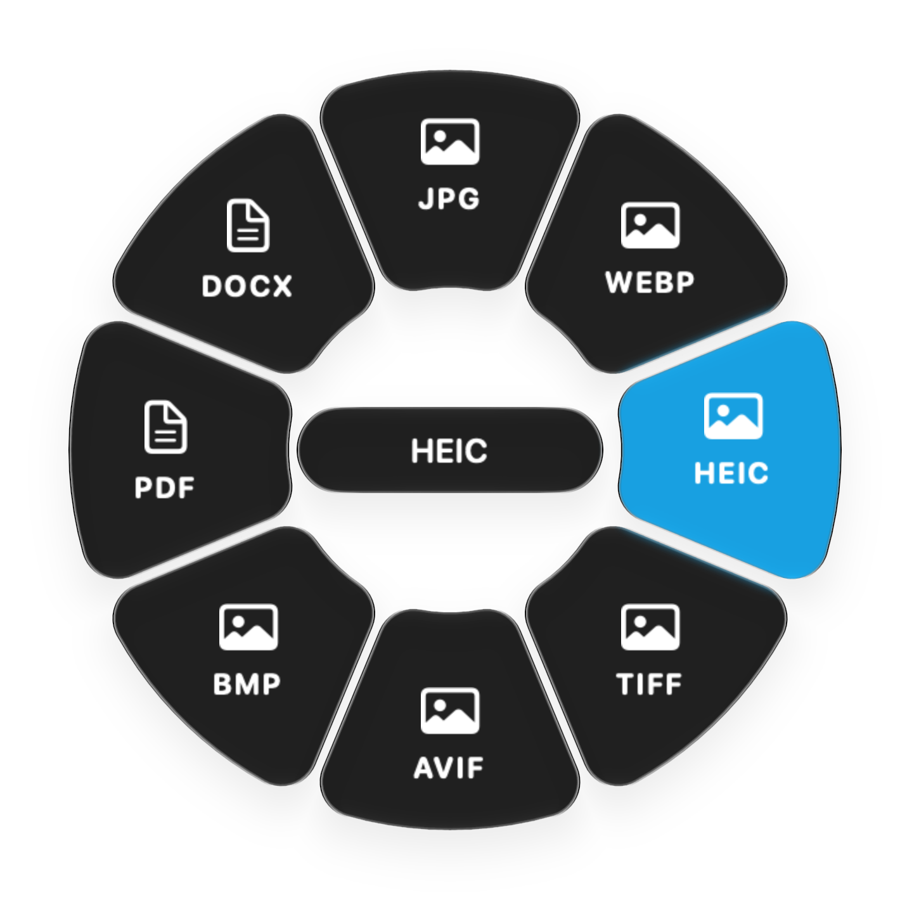
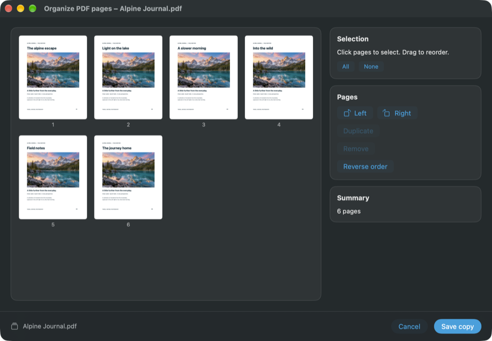
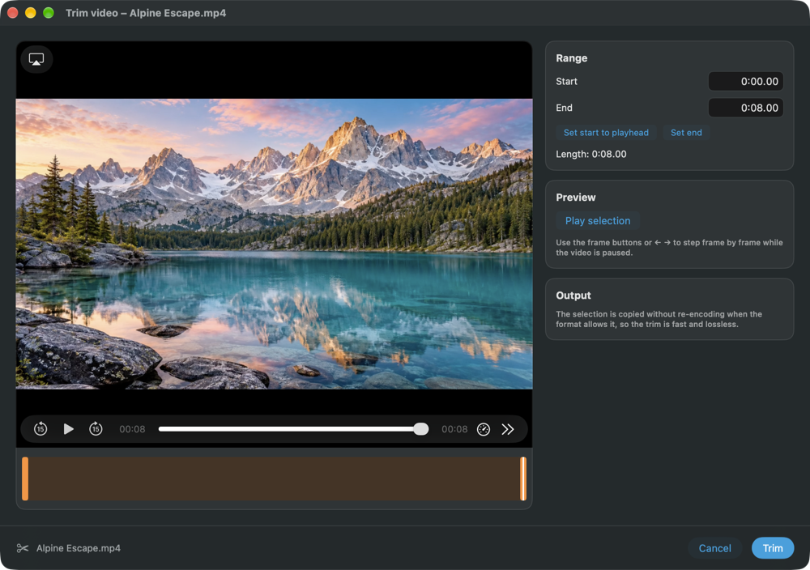

01 / IMAGESYour photos,
Your photos,
with a little polish.
Fine-tune light and color, crop to the right size, or add a background and soft shadow. Make the edit, compare it, and save a copy.

A LITTLE UTILITY FOR YOUR MAC
Convert, edit, and tidy up your files without breaking your stride. Your everyday toolkit is just a drag away.
Native to Mac. Right at home in your workflow.

RIGHT WHERE YOU ARE
No detour through a complicated workspace. Start with the file you already have.
Start dragging a file from Finder. Hold ⇧ Shift to reveal the conversion wheel.
Move over a format and release. For editing tools, hold ⇧ Shift + ⌥ Option while dragging.
Find the result in your chosen output location. Prefer clicking? Open files from the HaloDrops menu bar menu.
A TOOLKIT, NOT A TO-DO LIST
From a quick crop to a cleaner PDF,
give everyday files the attention they need.
Fine-tune light and color, crop to the right size, or add a background and soft shadow. Make the edit, compare it, and save a copy.

Merge PDFs, split documents, or rearrange, rotate, and remove pages in a visual workspace.

Trim a clip, choose precise audio in and out points, or remove silence from the ends of a recording.

Compress files in a batch, choose a quality preset, and save compressed copies.
A native interface, light and dark appearances, and a home in your menu bar.
File conversions and edits run locally on your Mac. No file upload workflow.
That’s the idea behind HaloDrops.
Explore the support guide